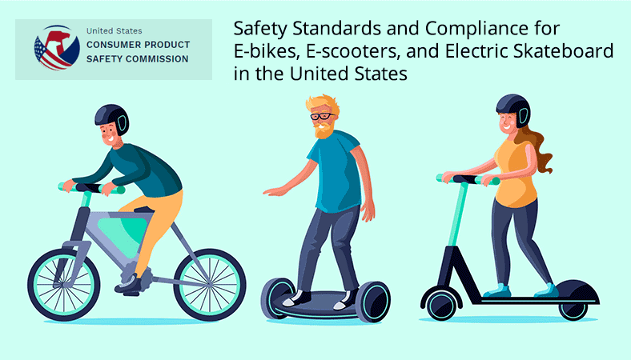

Rules and Regulations while riding e-rides
Rules and Legal Requirements for Riding Electric Scooters and Skateboards
Riding electric scooters and electric skateboards offers a fun, efficient, and eco-friendly way to travel. However, understanding the rules for riding electric scooters and rules for skateboarding is essential for safety, legal compliance, and avoiding fines. Whether you're riding in your local neighborhood or traveling abroad, this guide will help you understand what is required to ride safely and legally.

Legal Requirements for Electric Skateboarding
Although electric skateboards are gaining popularity, their legality varies from country to country and even within different regions of the same country. Below are some general legal considerations:
- Some cities consider electric skateboards as personal mobility devices and allow them on bike lanes.
- In certain areas, they are classified as motorized vehicles and may require registration.
- Helmet use may be mandatory in some places, especially for riders under a certain age.
- Some jurisdictions prohibit riding electric skateboards on sidewalks due to pedestrian safety concerns.
- Lights and reflectors may be required for night riding.
Where you can Ride
Rules for Riding Electric Scooters on the Road
- Sidewalks: Many cities prohibit electric scooters on sidewalks to prevent collisions with pedestrians.
- Bike Lanes: In most regions, electric scooters are allowed in bike lanes, making them a safer alternative to the main road.
- Roads: If riding on the road, stay as close as possible to the right-hand side and follow traffic regulations.
- Parks and Trails: Some parks allow e-rides, but always check posted signs or local laws before entering.
Rules for Skateboarding
- Skate Parks: Designated skate parks are the best places to practice and perform tricks safely.
- Public Roads: Some areas prohibit skateboarding on public roads for safety reasons.
- Private Property: Always get permission before skateboarding on private property.
- Schools and Public Spaces: Many schools and public buildings have restrictions against skateboarding on their premises.
Speed Limits
- Sidewalks and Pedestrian Areas: 6–10 km/h (4–6 mph)
- Bike Lanes and Roads: 20–25 km/h (12–15 mph)
- Highway Restrictions: E-rides are generally not allowed on highways or roads with high-speed limits.
- Parks and Trails: Speed limits vary but are generally lower in shared-use areas.
Local and International Skateboard laws
